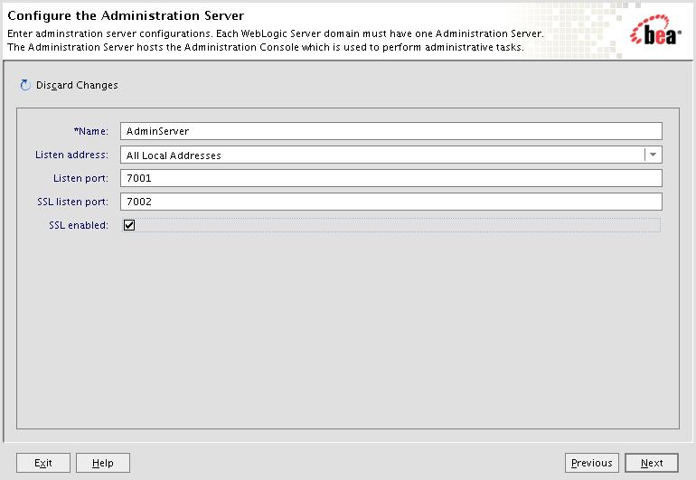
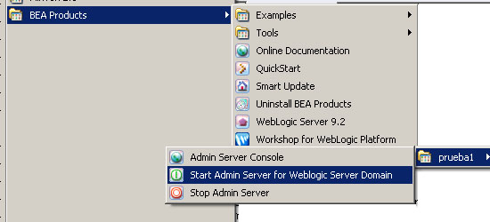
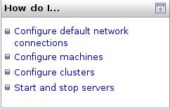

Introducción a los servidores de aplicaciones. Instalación de Bea WebLogic
Introducción a los servidores de aplicaciones
En este tema veremos una pequeña introducción a los servidores de aplicaciones. Comentaremos los términos más utilizados y los conceptos que usaremos más adelante.
Aplicaciones de empresa
El concepto de servidor de aplicaciones está relacionado con el concepto de sistema distribuido. Un sistema distribuido, en oposición a un sistema monolítico, permite mejorar tres aspectos fundamentales en una aplicación: la alta disponibilidad, la escalabilidad y el mantenimiento. En un sistema monolítico un cambio en las necesidades del sistema (aumento considerable del número de visitas, aumento del número de aplicaciones, etc.) provoca un colapso y la adaptación a dicho cambio puede resultar catastrófica. Vamos a ver estas características con ejemplos.
- La alta disponibilidad hace referencia a que un sistema debe estar funcionando las 24 horas del día los 365 días al año. Para poder alcanzar esta característica es necesario el uso de técnicas de balanceo de carga y de recuperación ante fallos (failover).
- La escalabilidad es la capacidad de hacer crecer un sistema cuando se incrementa la carga de trabajo (el número de peticiones). Cada máquina tiene una capacidad finita de recursos y por lo tanto sólo puede servir un número limitado de peticiones. Si, por ejemplo, tenemos una tienda que incrementa la demanda de servicio, debemos ser capaces de incorporar nuevas máquinas para dar servicio.
- El mantenimiento tiene que ver con la versatilidad a la hora de actualizar, depurar fallos y mantener un sistema. La solución al mantenimiento es la construcción de la lógica de negocio en unidades reusables y modulares.
¿Qué es un servidor de aplicaciones?
El estándar J2EE permite el desarrollo de aplicaciones de empresa de una manera sencilla y eficiente. Una aplicación desarrollada con las tecnologías J2EE permite ser desplegada en cualquier servidor de aplicaciones o servidor web que cumpla con el estándar. Un servidor de aplicaciones es una implementación de la especificación J2EE. La arquitectura J2EE es la siguiente:
Definimos a continuación algunos de los conceptos que aparecen en la figura:
- Cliente web (contenedor de applets): Es usualmente un navegador e interactúa con el contenedor web haciendo uso de HTTP. Recibe páginas HTML o XML y puede ejecutar applets y código JavaScript.
- Aplicación cliente: Son clientes que no se ejecutan dentro de un navegador y pueden utilizar cualquier tecnología para comunicarse con el contenedor web o directamente con la base de datos.
- Contenedor web: Es lo que comúnmente denominamos servidor web. Es la parte visible del servidor de aplicaciones. Utiliza los protocolos HTTP y SSL (seguro) para comunicarse.
- Servidor de aplicaciones: Proporciona servicios que soportan la ejecución y disponibilidad de las aplicaciones desplegadas. Es el corazón de un gran sistema distribuido.
Frente a la tradicional estructura en dos capas de un servidor web (ver siguiente figura) un servidor de aplicaciones proporciona una estructura en tres capas que permite estructurar nuestro sistema de forma más eficiente. Un concepto que debe quedar claro desde el principio es que no todas las aplicaciones de empresa necesitan un servidor de aplicaciones para funcionar. Una pequeña aplicación que acceda a una base de datos no muy compleja y que no sea distribuida probablemente no necesitará un servidor de aplicaciones, tan solo con un servidor web (usando servlets y jsp) sea suficiente.
Como hemos comentado, un servidor de aplicaciones es una implementación de la especificación J2EE. Existen diversas implementaciones, cada una con sus propias características que la pueden hacer más atractiva en el desarrollo de un determinado sistema. Algunas de las implementaciones más utilizadas son las siguientes:
- BEA WebLogic
- JBoss
- IBM WebSphere
- Sun-Netscape IPlanet
- Sun One
- Oracle IAS
- Borland AppServer
Los dos primeros son los más utilizados en el mercado. Nosotros vamos a utilizar el servidor BEA WebLogic. La principal ventaja de WebLogic es que podemos crear un sistema con varias máquinas con distintos sistemas operativos: Linux, Unix, Windows NT, etc. El sistema funciona sin importarle en qué máquina está corriendo el servidor.
Otros conceptos que aparecerán a lo largo de este módulo:
- Servidor proxy: Centraliza peticiones de los clientes y las reenvía hacia otras máquinas. Puede servir como nivel de indirección y seguridad. También puede ser usado para realizar balanceo de carga.
- Cortafuegos (firewall): Proporciona servicios de filtrado, autorización y autentificación. Puede actuar como proxy y ayuda a manejar los ataques de los hackers.
- Máquina: Representa una unidad física donde reside un servidor. Una máquina se define como tipo Unix o no Unix (Windows NT, etc.).
- Servidor: Un servidor es una instancia de la clase weblogic.Server ejecutándose dentro de una máquina virtual de Java. Un servidor está alojado en una máquina, pero una máquina puede contener varios servidores. Si un servidor no lo declaramos en ninguna máquina WLS asume que está en una creada por defecto.
- Dominio: Un dominio es una unidad administrativa. Sirve para declarar varios servidores, aplicaciones, etc. y que todos ellos estén asociados mediante el nombre del dominio.
- Clustering (asociación): Los clusters permiten asociar maquinas y servidores para que actúen de forma conjunta como una única instancia. La creación de un cluster va a permitir el balanceo de carga y la recuperación frente a fallos.
- Balanceo de carga: Es una técnica utilizada para distribuir las peticiones entre varios servidores de tal forma que todos los servidores respondan al mismo número de peticiones.
- Recuperación ante fallos (failover): Permite evitar la caída de un sistema cuando una máquina deja de funcionar o funciona incorrectamente.
- Puerto de escucha: Un servidor tiene varios puertos por los que puede "escuchar" las peticiones. Existen puertos ya asignados a aplicaciones concretas, como por ejemplo el puerto de http que suele ser el 80. Los puertos permiten que varias aplicaciones puedan atender distintas peticiones en la misma máquina. Un puerto en una dirección se especifica de la siguiente manera: http://localhost:7001/direc . Con :7001 indicamos el puerto que estamos atacando. Los puertos del 0 al 1023 son reservados por el sistema. Podemos disponer de los puertos del 1024 al 65536. Hay que tener en cuenta que dos servicios no pueden estar escuchando en el mismo puerto.
- Modo producción y modo desarrollo. Hablaremos muy a menudo de modo desarrollo y modo producción. El modo desarrollo es cuando nos encontramos desarrollando nuestra aplicación y no está disponible exteriormente. El modo producción es cuando está funcionando a pleno rendimiento y tenemos clientes que se encuentran utilizándola. Por defecto, un dominio se arranca en modo desarrollo.
Instalación del servidor Bea WebLogic 9
Los pasos a seguir en la instalación de un servidor de aplicaciones es la siguiente:
- Instalación del software. Esta acción copia los ficheros necesarios y crea la estructura inicial de directorios.
- Configuración de dominios. Debemos configurar el o los dominios necesarios y todos los componentes dentro de cada dominio (servidores, cluster, máquinas, etc.).
Instalación del servidor de aplicaciones
Vamos a instalar el servidor de aplicaciones Bea WebLogic. La instalación descrita aquí es para la versión 9.2 y bajo el sistema operativo Windows XP. Los requerimientos del sistema para la instalación de esta versión son:
- Memoria: 1Gb mínimo (2Gb aconsejable)
- Espacio en disco: 800Mb
- Versión de Java 2 JDK (se instala junto con el servidor) o superior. Podemos utilizar otra versión de Java, pero es aconsejable consultar la información de Bea para comprobar la compatibilidad entre versiones.
Ejecutamos el fichero server921_win32.exe. Esperamos hasta que nos aparezca la siguiente pantalla.
Nos aparecerá una ventana de licencia a la que decimos que sí y pasamos a la siguiente pantalla.
Si ya disponemos de un directorio creado lo podemos elegir de la lista. Si no, podemos dejar el mostrado por defecto, o definir uno distinto.
Podemos escoger el tipo de instalación que deseamos realizar.
Deseleccionamos la opción siguiente. Es una herramienta para realizar pruebas en los despliegues.
Nos queda elegir el directorio donde queremos que se instale el servidor de aplicaciones. Por defecto lo hace en el directorio weblogic92.
Por último, indicamos si queremos que el software esté disponible para todos los usuarios de Windows o sólo para el actual.
Después de los pasos anteriores empezará la instalación, que durará unos minutos. Cuando finalice nos aparecerá la ventana siguiente. Deseleccionamos la opción Run QuickStart y pinchamos en Done. Hemos finalizado la instalación del servidor.
La estructura de directorios creada en la instalación es la siguiente:

El directorio jdk150_06 contiene la distribución 1.5 de J2SE de Sun. Si tenemos una versión actualizada de Java simplemente la añadiremos al CLASSPATH. En este punto debemos tener un cuidado especial y comprobar si la versión de Java es soportada por la versión del servidor de aplicaciones. Para comprobarlo visitar la página de Bea. El siguiente directorio, jrockit90..., contiene una versión de Java propia de Bea. El directorio de logs contiene el fichero log de instalación. El directorio utils contiene algunas utilidades que iremos viendo conforme las utilicemos. El siguiente directorio, weblogic92, es el que contiene todas las librerías, clases y herramientas adicionales para el funcionamiento de nuestro servidor. El directorio workshop92 contiene la aplicación Workshop de Bea, que veremos más adelante. El fichero license.bea contiene la información de nuestra licencia en formato XML. Contendrá información de la fecha de expiración de la licencia, de qué características disponemos (número de puestos, número de IPs, etc.), y toda la información necesaria para la ejecución del servidor. El ejecutable UpdateLicense.cmd nos va a permitir actualizar una nueva licencia.
A su vez, el directorio weblogic92 contiene los siguientes subdirectorios:
Nos interesan, de momento, el directorio common y el server. Common contiene los subdirectorios mostrados en la siguiente figura. En el directorio bin tenemos una herramienta para crear dominios. El directorio nodemanager contiene ficheros de configuración para el Node Manager.
El directorio server contiene datos y utilidades relacionadas con el servidor de aplicaciones. En el directorio bin tenemos varias aplicaciones y los scripts para arrancar el servidor de aplicaciones y el Node Manager. El ejecutable para arrancar un servidor que se crea en nuestro dominio llama a estos ejecutables. En otro directorio dentro de server, el subdirectorio lib, tenemos el fichero weblogic.jar que tendremos que incluir en el classpath cuando queramos realizar una aplicación que utilice los recursos de WebLogic. También disponemos en este directorio de los ficheros que gestionan las políticas de seguridad.
Arranque del dominio y consola de administración
Antes de empezar a definir los elementos que soportan la ejecución del servidor de aplicaciones vamos a comentar algunos conceptos sobre los distintos tipos de servidores.
Como ya hemos comentado, nuestra principal unidad de trabajo es el dominio. El dominio no es más que una agrupación de todos los componentes que utilizamos para nuestro trabajo (servidores, máquinas, aplicaciones, etc.). Un ejemplo de uso de dominios es el siguiente. Cuando se desarrolla una aplicación se suele separar la fase de desarrollo de una aplicación con la fase de producción (cuando la aplicación ya está funcionando hacia el usuario y dando servicio). Para manejar esta situación podemos tener creados dos dominios, uno para desarrollo y otro para producción. A pesar de contener exactamente los mismos componentes funcionan de forma independiente.
Dentro de un dominio vamos a tener máquinas y servidores. Al menos debemos tener un servidor en nuestro dominio, que llamaremos de administración. El servidor de administración es único en el dominio y va a realizar, como su nombre indica, tareas administrativas. Podemos tener más servidores, que llamaremos administrados (managed). De este tipo de servidor podemos tener tantos como queramos.
Vamos a empezar a crear nuestro primer dominio. Vamos a llamarlo MiDominio y contendrá dos servidores alojados en la misma máquina: Servidor1 y Servidor2. El servidor 1 será el de administración. Utilizaremos un asistente que incorpora Weblogic para crear el dominio y los servidores. Ejecutamos Bea products -> Tools -> Configuration Wizard dentro del menú de programas.
Nos aparecerá la ventana que se muestra en la siguiente figura, en la que podemos optar por crear una nueva configuración o extender (añadir nuevas características) a una existente. Vamos a seleccionar crear una nueva configuración. Pulsamos en el botón Next.
Ahora debemos seleccionar si queremos instalar un dominio con diferentes opciones, como puede ser hacer uso de una plantilla. Nos interesa la opción seleccionada.
En la siguiente pantalla debemos configurar un usuario de administración. Vamos a darle como nombre system y como contraseña weblogic.
Como ya comentamos, existen dos modos principales de trabajo: modo desarrollo y modo producción. Para cada modo existen una serie de características que están habilitadas o no. Nosotros vamos a trabajar siempre en modo desarrollo. Podemos seleccionar la versión de Java que más nos convenga. Por defecto vamos a utilizar siempre la versión de Java que incorpora WebLogic.
Pulsamos Next y nos deja elegir entre definir un dominio sencillo (con las opciones por defecto) o definir nuestra propia configuración. Elegimos Yes para comprobar las opciones disponibles. Pulsamos Next.

En la siguiente pantalla se nos pide que definamos el servidor de administración. Tenemos que definir el nombre del servidor (debe ser único en el dominio), en qué dirección (IP ó DNS) estará escuchando el servidor y los puertos de escucha (por defecto se suele dar el 7001 y el 7002 para el puerto seguro).

Al pinchar en Next nos aparece la ventana mostrada a continuación donde podemos definir nuevos servidores. Los botones Add y Delete sirven para añadir nuevos servidores o eliminarlos. Para cada nuevo servidor debemos definir las mismas opciones que dimos al servidor de administración. Un punto importante es que el puerto de escucha debe ser distinto para cada servidor que se ejecute en la misma máquina.
La siguiente pantalla nos permite definir un cluster. Veremos esta opción más adelante, de momento pasamos de pantalla.
En esta se nos permite definir una máquina. También lo dejamos para más adelante.

Esta ventana nos muestra la información introducida (servidores, máquinas, etc.) previamente.
En esta pantalla nos pide que demos el nombre del dominio y el directorio donde queremos que se instale. Se va a llamar prueba1.
Iniciamos la creación del dominio y cuando finalice nos tiene que aparecer una ventana como la siguiente. Pinchamos en Done y hemos terminado de definir el dominio.
Una vez creado el dominio la estructura de directorios creada es la siguiente:
Dentro del directorio servers tenemos un directorio por cada servidor creado, donde se guardan datos específicos del servidor (por ejemplo el fichero log). Estos directorios se crean cuando se pongan en marcha los servidores. El fichero config.xml (dentro del directorio config contiene los datos del dominio (nombre de los servidores, máquinas, dominio, etc., nombre de las aplicaciones y su configuración, etc.). El fichero startWebLogic.cmd sirve para arrancar los servidores. El fichero startManagedWebLogic_readme.txt contiene instrucciones de cómo arrancar los servidores administrados.
Arranque y configuración
El proceso anterior nos ha creado un nuevo submenú en el menú Bea products. El nuevo menú se llama Users projects y contendrá los dominios que vayamos creando. Nos tiene que aparecer el dominio Prueba1 y las opciones que nos aparecen en la siguiente imagen.

Para poner en marcha el servidor de administración debemos ejecutar la opción correspondiente. Nos aparecerá un terminal y tenemos que esperar hasta que nos aparezca el mensaje:
<Server started in RUNNING mode>
Para arrancar un servidor administrado, tenemos que abrir una terminal y ejecutar:
C:\bea\user_projects\domains\prueba1\bin\startManagedWebLogic.cmd Servidor2 http://localhost:7001
donde Servidor2 es el nombre del servidor administrado y la siguiente dirección es la de escucha del servidor de administración.
El servidor de administración nos facilita una aplicación que permite administrar nuestro dominio. Es la consola de administración (Console). Con la consola podemos configurar los atributos de los distintos recursos, hacer despliegues de aplicaciones, monitorizar el uso de recursos, ver mensajes de log y poner en marcha o parar los distintos servidores de nuestro dominio. La consola se gestiona con un navegador en la siguiente dirección: http://dirección-de-escucha:7001/console o bien ejecutamos la opción del menú de nuestro dominio que arranca la consola. Nos aparecerá una página donde se nos solicita el usuario y la contraseña. Una vez introducida nos aparecerá la siguiente página.
Vamos a ver las distintas partes que nos aparecen en la consola de administración. Lo primero es el Change Center.
Si activamos la opción Lock and Edit se nos va a permitir hacer cambios en nuestro dominio. Si la activamos y modificamos alguna opción, nos tiene que aparecer una ventana como la siguiente:
Ahora podemos aplicar los cambios hechos hasta el momento o deshacer estos cambios. Este control actúa como un commit en una base de datos: hasta que no se le da a aceptar no se aplican los cambios parciales. Hay cambios que se aplican directamente y otros para los que es necesario reiniciar el servidor. Estos últimos aparecen con el siguiente símbolo:
Lo siguiente que nos aparece (en la parte izquierda de la ventana) es la estructura del dominio. Con estas opciones podemos acceder, crear, eliminar y configurar a los distintos elementos y servicios en nuestro dominio. Las primeras opciones nos permiten configurar los elementos del dominio (servidores, máquinas, cluster, etc.). A continuación podemos realizar despliegues de aplicaciones, aplicaciones web, EJBs, etc. Después los servicios configurables (JDBC, JMS, Virtual Hosts, etc.). Por último, aparecen opciones de seguridad, interoperatibilidad y diagnóstico, que iremos viendo conforme necesitemos.
Más abajo tenemos una ayuda on-line. Podemos minimizar esta opción con el botón en su parte superior derecha.

Siguiendo hacia abajo, se nos muestra el estado del sistema.
En la siguiente columna (la parte de la derecha más amplia) tenemos toda la información de dominio y podemos ir accediendo a sus distintos elementos. La barra superior (ver siguiente figura) nos muestra datos del dominio, y distintas opciones que podemos seleccionar:

Las opciones son bastante triviales. Vamos a ver la de preferences. Al pinchar esta opción nos aparece la siguiente ventana:
Las opciones que nos interesan son: Show Inline Help que nos muestra información de cada campo y cada ventana y File Browser Start que nos dice el directorio que nos aparecerá por defecto cuando pinchemos en una opción para seleccionar un fichero.
Vamos a ir viendo las distintas opciones en el apartado de configuración del dominio. Pinchamos en Prueba1 y nos aparecerá lo siguiente:
- La habilitación del puerto de administración, si marcada, permite que todos los elementos del dominio se comuniquen con el servidor de administración mediante una conexión segura. Además podemos configurar un puerto adicional (no puede ser el seguro del servidor de administración) para dichas comunicaciones. Esta opción permite que podamos arrancar un servidor en modo standby en el cual el servidor no escucha las peticiones que le llegan a su puerto, pero se permite una comunicación con el servidor de administración. También permite separar las peticiones de aplicación (llegan de las aplicaciones que usan el sistema) de las peticiones de administración (generadas por o hacia el servidor de administración). De esta manera una petición del servidor de administración puede ser atendida sin tener que esperar su turno dentro de las peticiones de aplicación. Si activamos esta opción debemos asignarle un puerto de comunicación. Al activar la opción, la consola sólo responde por https://dirección:puerto-asignado/console
- La opción siguiente nos permite especificar si trabajamos en modo producción. La activación de esta opción implica que ciertas características están activas y otras no.
- Si activamos la última opción para que un cluster responda a una aplicación todos sus servidores tienen que estar funcionando a la vez.
Si pinchamos en la opción Advanced se nos mostrarán algunas opciones avanzadas. Algunas de ellas son:
- Habilitar la consola. En modo producción suele ser habitual deshabilitar la consola, para que no pueda ser accedida desde el exterior.
- La siguiente opción nos permite dar un nombre distinto a la aplicación de la consola. Si, por ejemplo, damos el nombre miconsola, para acceder a la consola tendríamos que teclear http://dirección:puerto/miconsola.
En la solapa de Logging (el resto de opciones las veremos conforme las necesitemos) podemos configurar el fichero log del dominio. El fichero log almacena toda la información y mensajes del dominio. Las opciones son las siguientes:
- Podemos cambiar el nombre del fichero log.
- La siguiente opción permite especificar el tipo de rotación. Las opciones a elegir son por tamaño o por tiempo. La rotación permite que el fichero log no vaya creciendo indefinidamente. Si elegimos por tamaño, se cogerá el valor del parámetro Maximum File Size y, cuando el fichero de log alcance ese tamaño, creará un nuevo fichero de log, renombrando el anterior. Si, por ejemplo, el nombre del fichero de log es midominio.log y hemos seleccionado una rotación por tamaño y 500k de tamaño mínimo, cuando el fichero alcance ese tamaño el sistema cambiará el nombre del fichero por midominio.0 y creará uno nuevo, midominio.log, donde se seguirá almacenando la salida del sistema. Cuando se vuelva a superar ese límite se le dará el nombre midominio.1 y así sucesivamente. El otro tipo de rotación, de tiempo, actúa de manera similar, pero especificando un tiempo de rotación. Cuando el reloj del sistema llega a esa hora se produce el cambio de fichero. En esta opción, podemos especificar cada cuantas horas se produce el cambio, cambiando el valor de Rotation Interval.
- La penúltima opción permite limitar el número de ficheros a almacenar. Si la activamos toma el valor de la siguiente opción Files to Retain y, cuando el contador de fichero alcance ese valor, empieza desde cero sobreescribiendo el primero.
La opción Log Filters permite crear filtros para la información que se mostraría en el fichero log. No entramos en cómo crear estos filtros, pero una opción interesante y que nos aparecerá en otras pantallas es Customize this table. Sin pinchamos en esta opción, nos aparecerá algo similar a lo mostrado en la siguiente figura y nos permite indicar el orden de visualización de los elementos en la ventana, el número total de elementos a mostrar y varias opciones más.
Cuando seleccionamos la solapa Monitoring nos aparece la información mostrada en la siguiente figura. Dispondremos de la información por separado de cada servidor así como el estado de los servicios en cada servidor. También tenemos una opción para ver el estado de los servidores en nuestro dominio y los clusters creados
La solapa de control permite controlar (parar, poner en marcha, etc.) los servidores del dominio.
La última solapa, Notes, nos permite introducir notas asociadas a la configuración actual. Esto es común en la mayoría de opciones de configuración. Tienen un carácter informativo.